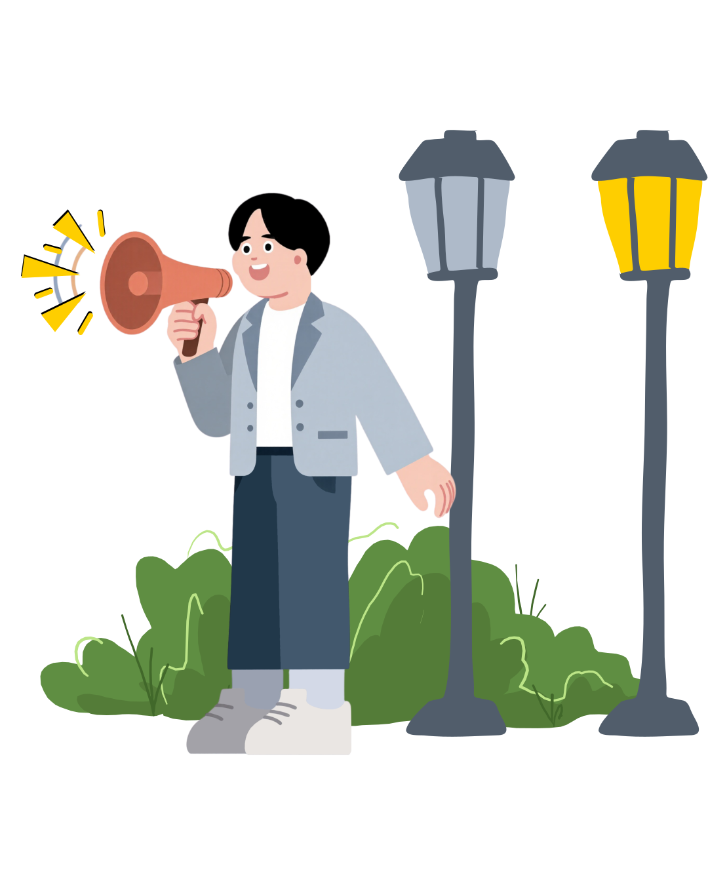

O sistema em que você exerce seu direito para uma cidade melhor.
Solicite reparos em propriedades públicas de maneira rápida e acompanhe o progresso de sua realização.
Como Solicitar um reparo?
Entre com seu CPF
Ele será utilizado para que você acompanhe o progresso dos reparos que solicitou!
Clique em Criar Solicitação
Isso irá te levar para a página onde você solicitará o reparo.
Preencha os dados
Agora é só preencher os dados de acordo com o reparo que quer solicitar e clicar em “Criar”!
Pronto!Como acompanhar uma solicitação?
Entre com seu CPF
Após, você já será levado à página de acompanhamento!
Menu de solicitações
No menu você pode ver todas as suas solicitações e buscar uma específica pelo número do protocolo.
Quais informações o Card de Solicitação mostra?
Prazo de resolução
Cada solicitação tem um limite de tempo para ser resolvido
Progresso
O card mostra em que etapa do processo a solicitação está, sendo visto até mesmo pela sua cor!
Justificativa
Ao realizar uma atualização do progresso da etapa, o funcionário deixa uma justificativa sobre ela.